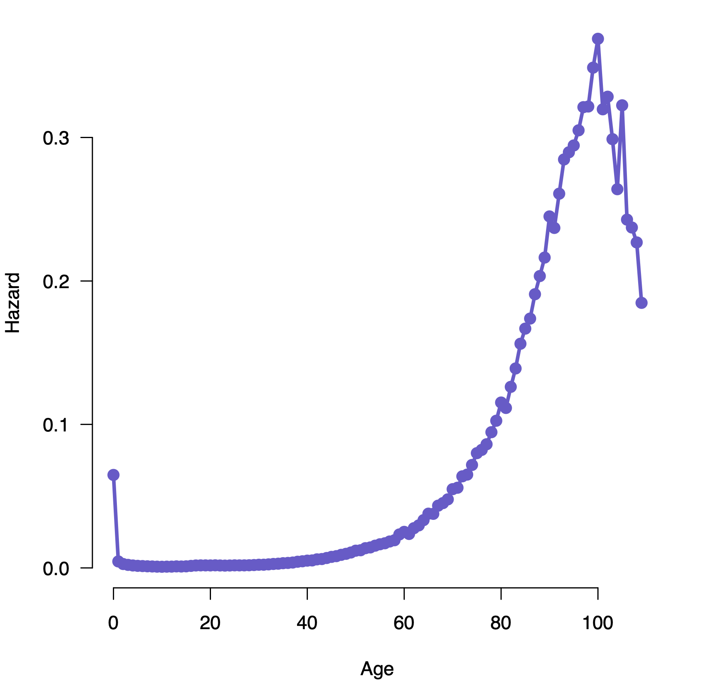
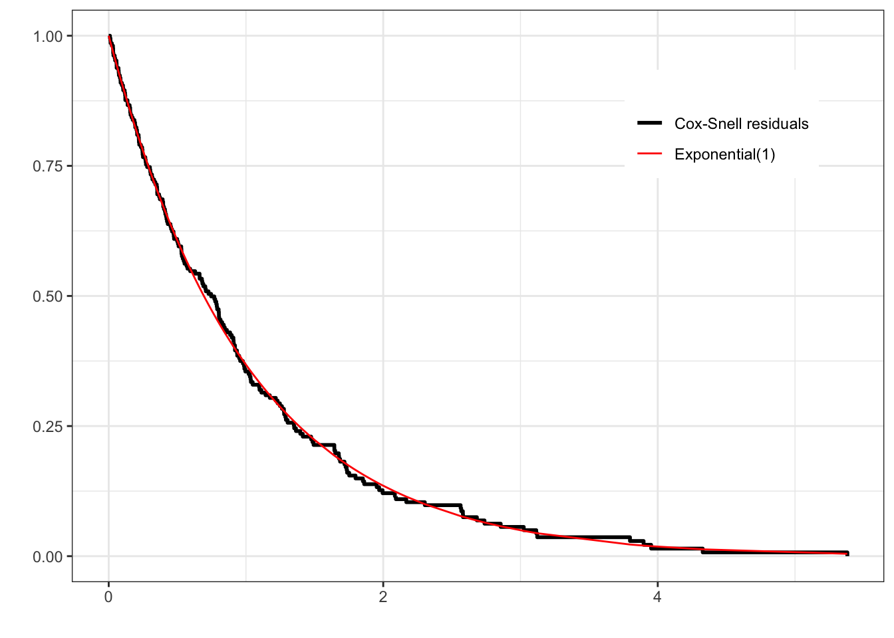

\[
h(t) = \lim_{\Delta t \rightarrow 0} \frac{P(t \leq T < t + \Delta t | T > t)}{\Delta t}
\] The numerator is the chance of experiencing an event right after time tgiven that there is no event experienced until time t. So \(h(t)\) is like a derivative. In fact, let’s re-write the formula as
\[
\begin{eqnarray*}
h(t) &=& \lim_{\Delta t \rightarrow 0} \frac{F(t + \Delta t) - F(t)}{\Delta t}\frac{1}{1-F(t)}\\
&=& \frac{1}{1-F(t)} \frac{dF(t)}{dt}\\
&=& f(t)/(1-F(t))
\end{eqnarray*}
\] where \(F(t) = P(T \leq t)\) is the c.d.f., and \(f(t) = dF(t)/dt\) is the p.d.f of the distribution of the followup time T. Turns out (if you remember basic calculus) that
\[
h(t) = -\frac{d\log S(t)}{dt}
\] where \(S(t) = 1-F(t)\). Because of this relationship, we can define the cumulative hazard
\[H(t) = \int_0^t h(u)du = -\log S(t)\] and the inverse relationship between the survival and hazard functions is \[
S(t) = \exp\left(-\int_0^t h(u)du\right) = \exp(-H(t))
\]
The hazard function is another way of defining the probability distribution of T, since there is a 1:1 relationship between \(h(t)\) and \(F(t)\) based on the equations above.
Trying to gain intuition
Suppose N individuals are alive at age 50. We observe d deaths in the next x years. Then the observed x-year death rate among those who have reached 50 years would be d/N. Let’s try and write this formulaicly.
\[
d = N P(50 < T \leq 50 + x | T > 50)\\
d/N = P(50 < T \leq 50 + x | T > 50)\\
\]
You can now consider the death rate per unit time as the death rate divided by the time over which the deaths were observed.
\[
\text{death rate per unit time} = P(50 < T \leq 50 + x | T > 50)/x
\]
We can make the length x of the time intervals we measure smaller and smaller, and ask the same question: what is the death rate per unit time when deaths are observed over small time intervals after age 50. As x gets smaller, we will hit the hazard at age 50. This can be interpreted as the instantaneous rate of dying.
With a little abuse of notation, we can write \(h(t)dt = P(t < T \leq t + dt | T > t)\) which gives the chance of dying in the tiny time interval \((t, t+\Delta t]\)given one has survived until time t.
Some more intuition
Let’s think about how the hazard function for different processes might look. Think of typical human populations. There is an increased chance of dying very early in life (the first year), which reduces over time to some steady value through the teen and adult years, then increases again late in life. This might look like this:

Patrick Breheny, https://myweb.uiowa.edu/pbreheny/7210/f19/notes/8-29.pdf
The chance that a car will have a serious problem increases with time, so you’d expect an increasing hazard function with age. There are, of course, processes where the hazard is constant over time; the chance that a light bulb fails, the chance that a radioactive object emits a particle. These proecesses are memoryless, since the chance of failure at any time doesn’t depend on what has happened in the past.
The Weibull distribution gives us a way to model different hazard patterns (though strictly monotonic hazard functions).
Figure 6.1: Survival curves of the Weibull distribution keeping scale constant and changing shape
Notice that for shape = 0.5, we have a decreasing hazard, which means the chance of failing is higher earlier, which is reflected in an early steep drop in the survival function. When shape = 2, we have an increasing hazard function, which means the chance of failing is later in time; we see the corresponding survival curve is flatter early and drops down later.
The case of shape = 1 has a constant hazard, which results in an exponential distribution, and vice versa.
This is a shape of the hazard curve that is used in engineering, but also reflects many demographic and biological processes.
https://en.wikipedia.org/wiki/Bathtub_curve
The Weibull hazard functions are always monotonic (so increasing or decreasing). The bathtub hazard function can be modeled as a mixture of Weibull distributions
The hazard ratio
Suppose you have two survival processes, e.g., survival under treatment of a drug, and survival under a placebo. They each define a hazard, \(h_1(t)\) and \(h_2(t)\). The hazard ratio at time \(t\) is then \(h_1(t)/h_2(t)\). This is interpreted as the relative chance of failing in each process, given no failures until time \(t\). A hazard ratio of 1/2, for example, means that at time \(t\), a person treated by a drug has half the chance of dying as a person receiving placebo.
When we say that we have proportional hazards, it implies that the hazard ratio at any time \(t\) doesn’t depend on \(t\). We can see this since we will have \(h_1(t) = k h_2(t)\) for all \(t\) (the proportionality criterion).
What models exhibit proportional hazards?
Since the exponential model has a constant hazard function, the ratio of hazards for two exponential distributions is by definition a constant for all times.
The Weibull hazard function is \(h(t) = \lambda k t^{k-1}\). So we will have proportional hazards provided \(k\) remains the same and only \(\lambda\) differs. From Figure 6.1, it is clear that keeping \(\lambda\) constant and changing \(k\) doesn’t result in a proportional hazards model.
We now introduce the Cox proportional hazard regression model. This model, as in all hazard regression models, relates the hazard \(h(t)\) to covariates x to model how your chance of failing is affected by the covariates. We start with a general form of the hazard function as it relates to the covariates
\[
\lambda(t|x) = \lambda_0(t)e^{x^T\beta}
\]
In what sense is this model a proportional hazards model? Consider two values of covariates \(x_1\) and \(x_2\). In that case, the hazard ratio is
\[
\lambda(t|x_1)/\lambda(t|x_2) = e^{(x_1-x_2)\beta}
\] which is independent of \(t\) and just depends on the difference of the x-values.
The brilliance of the Cox model here is that it can be fit to data ignoring what is going on with \(\lambda_0(t)\), which is called the baseline hazard (it’s the value of the hazard function when \(x=0\), hence “baseline”). The baseline hazard function is essentially ignored, and we can still get consistent and unbiased estimates of the \(\beta\)s.
The paper that proposed this proportional hazards model (Cox (1972)) is the most cited paper in statistics. Cox then proposed the partial likelihood (Cox (1975)) There was a bunch of theoretical work done in the 70’s and 80’s to prove that Cox regression “works” as expected under assumptions of proportional hazards and independent right censoring, which is the most common situation we face.
Cox regression has become a de facto standard to model the hazard in survival studies, including most clinical trials.
The Cox model doesn’t need to have just fixed or baseline covariates in it. It can have time-dependent covariates as well, for example sequences of cholesterol measurements per person. Such models are no longer proporational hazards, but can be fit using the same modeling paradigm and are quite useful in real-life scenarios.
Fitting the Cox model in R
The Cox model is fit in R using the coxph function. This function is used very much like the lm and glm models, except that the dependent variable is the composite Surv function rather than a single variable.
\[
\log (HR) = \beta
\] i.e. the \(\beta\) coefficients can be interpreted as the log of the hazard ratio when the corresponding covariate changes by 1 unit. The results of the Cox regression are thus in terms of log-hazard ratios. To make it easier to interpret, we can look at
Under this fitted model, we interpret that your chance of dying increases 6% per year of age, males are 20% more likely to die than females, and a unit increase in albumin reduces your risk of dying around 35%.
The HR for age is 1.06, which means if age increases 1 year, the hazard increases 1.06 times, so the change is 0.06 times the hazard at the reference year, so a 6% change
So fitting the model is quite straightforward and follows familiar patterns from linear and logistic regressions. The question that we must answer is, is this model a good fit to the data?
Checking the proporational hazards assumption
Since we don’t have time-dependent covariates, we are in the proporational hazards paradigm. So we can test whether the fitted model follows proportional hazards using the cox.zph function. This provides a statistical test to see if the model meets the proportional hazards assumption for each covariate. It also provides graphs for each variable estimating a time-dependent \(\beta(t)\) for each \(\beta\), with PH implying that \(\beta(t)\) is a horizontal line, i.e., independent of \(t\).
We’re used to analyzing residuals in linear regression to see if there might be additional signal in the data, or unequal variances. These residuals are merely the difference between the actual and fitted values of the dependent variable. It’s not quite so straightforward in survival studies when you have a composite dependent variable, and some obsevations are censored. Different types of residuals have been proposed.
Cox-Snell residuals look at overall goodness-of-fit of a model. For a well-fitting model, they should look like samples from an exponential(1) distribution
Martingale residuals, related to the Cox-Snell residuals, can be used to evaluate whether the appropriate functional form of a covariate has been used in the model
Schoenfeld residuals are used (in the cox.zph function above) to see the validity of the proportional hazards assumption
The martingale residuals can be generated using the residual function on a coxph object. A convenient way of doing this is using the broom::augment function .
We can compute the Cox-Snell residuals as the status variable (death) - the martingale residuals (.resid).
out<-out|>mutate(cs_resid =death-.resid)
One issue with Cox-Snell residuals is that they only tell you if the fit is good. They don’t tell you how to fix things if the fit is bad
To check for overall goodness-of-fit of the Cox model, you can check the distribution of the Cox-Snell residuals against the exponential distribution using the complementary log-log plot we’ve seen before, based on the estimated survival function below:
surv_estimate<-survfit(Surv(cs_resid, death)~1, data =out)

You can look at the appropriateness of the functional form of the continuous predictors (so, whether we need to transform the predictors or not to get a better fit) by plotting the martingale residuals against the predictor:
An adequate fit is indicated by the smooth fitted curve looking like a horizontal straight line. Other patterns are indicative of the need to transform the predictor.
The concordance index
Harrell’s C-index (or the concordance index) is a summary measure of the predictive strength of a survival model. It is basically asking, if individual i fails earlier than individual j, is the corresponding predicted risk of failure for individual i greater than the predicted risk for individual j, averaged over all pairs of individuals who failed. It is a number between 0 and 1, with 1 denoting a perfect predictive model and 0.5 a model whose predictions are no better than random .
This should seem familiar
We can potentially use the c-index to see if adding or subtracting features improves the discrimative power of the survival model. We will re-visit the C-index when we think about machine learning in the survival context.
Accelerated Failure Time models
Accelerated failure time (AFT) models are another class of regression models used in survival analysis. They ask a different question to the proportional hazards model and how covariates affect survival. The basic idea (using a binary covariate) is that the presence of the covariate x accelerates or decelerates your survival time (or time to failure) on average. The general model is
\[
\log (T) = X\beta + W
\] where \(W_i ~ f\) are the error terms. For example \(f\) could be a \(N(0,\sigma^2)\) distribution or an extreme value distribution or other distributions. Note that, if we didn’t have any censoring, we could fit this model using least squares. However, in the survival context, we do have censoring.
If we start with this form, and we consider a baseline process \(T_0\) which is the random variable denoting survival time when all the covariates are 0 (so \(T_0 \equiv e^W\)), then we have
\[
T = T_0 e^{X\beta}
\]
So in this model, the covariates act multiplicatively on time, so if \(e^{X\beta}=2\), then the subject with covariates \(X\) will have twice the survival times, or in other words, will age at half the time (The same value of the survival function will be achieved at double of each time point).
Recall that for a PH model, \(\lambda(t) = \phi \lambda_0(t)\) for some constant \(\phi\)
Let’s look at this a bit further. We see that the PH model changes the hazard function vertically, while the AFT model changes the hazard function horizontally.
If we look at the survival curves for the same hazards, we see that the shape of the AFT model changes from the PH model, which is more evident in the complementary log-log plot.
Note that if we have a hazard function that is linear on the log-time vs log-hazard scale, then a vertical shift and a horizontal shift look the same. This is a characteristic of the Weibull distribution, so it can follow both a PH and a AFT model (albeit with slightly different parametrizations)
If we fit a Weibull model with the survreg function, which only fits AFT models, we can get the parameter estimates of the corresponding PH model using b.ph = -b.aft / fit.aft$scale.